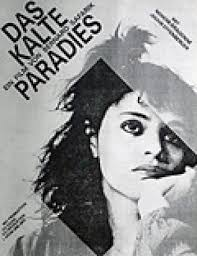
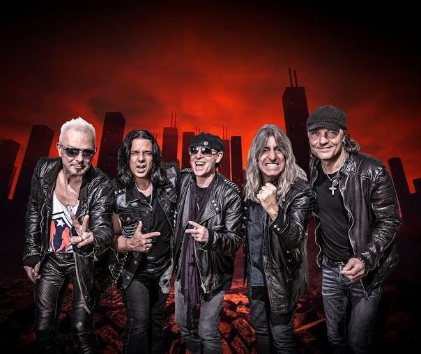
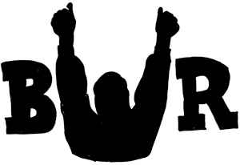

Historia
El grupo de rock SCORPIONS, fundado en 1965 en Hannover. Estos grupos fueron fundados por el guitarrista Rudolf Schenker y el bateria Wolfgang Dziony. La primera alineación estaba integrada, además de Schenker y Dziony, por Joachim Kirchhoff (bajo) y Karl Heinz-Wollmer (guitarra líder). En sus inicios se hacian llamar "The Nameless" o "Los Sinnombre", posteriormente pasaron a "The Scorpions" y a finales de 1969 decidieron denominarse simplemente "Scorpions". Entre 1965 y 1967 dieron varios conciertos por el norte de la entonces Alemania Occidental, versionando a The Beatles y The Rolling Stones, entre otras agrupaciones de la llamada invasión británica, y abriendo los conciertos de The Lords, The Searchers y Dave Dee. Seis meses después de su llegada, Heinz-Wollmer tuvo que cumplir con el servicio militar, así que por un tiempo cesaron sus actividades. Finalmente, en el otoño boreal de 1968 y con el nombre reducido al actual, Schenker y Dziony la reformaron con Ulrich Worobiec (guitarra líder), Lothar Heimberg (bajo) y Bernd Hegner (voz). A finales de 1969, Worobiec y Hegner fueron despedidos y para reemplazarlos Schenker invitó a su hermano menor Michael (guitarra) y a Klaus Meine (voz), ambos de la banda The Copernicus, quienes ingresaron el 30 de diciembre de 1969. En 1970, algunas de ellas las grabaron con CCA Records para la banda sonora de la película alemana antidrogas Das Kalte Paradies, pero pesar de que el sello independiente estimó publicarlas en un disco, estas nunca salieron a la venta
Desilusionados por lo anterior, buscaron otras opciones para poder lanzar su álbum debut y para ello, en el mismo año, participaron en un concurso de bandas en Hannover, cuyo premio era un contrato de grabación con Brain Records. A pesar de que consiguieron el primer lugar con buenas críticas del jurado, los descalificaron por tocar demasiado fuerte. Afortunadamente, cuatro semanas después, la banda que había logrado el primer puesto se había separado y por consiguiente les otorgaron el premio a ellos.
 